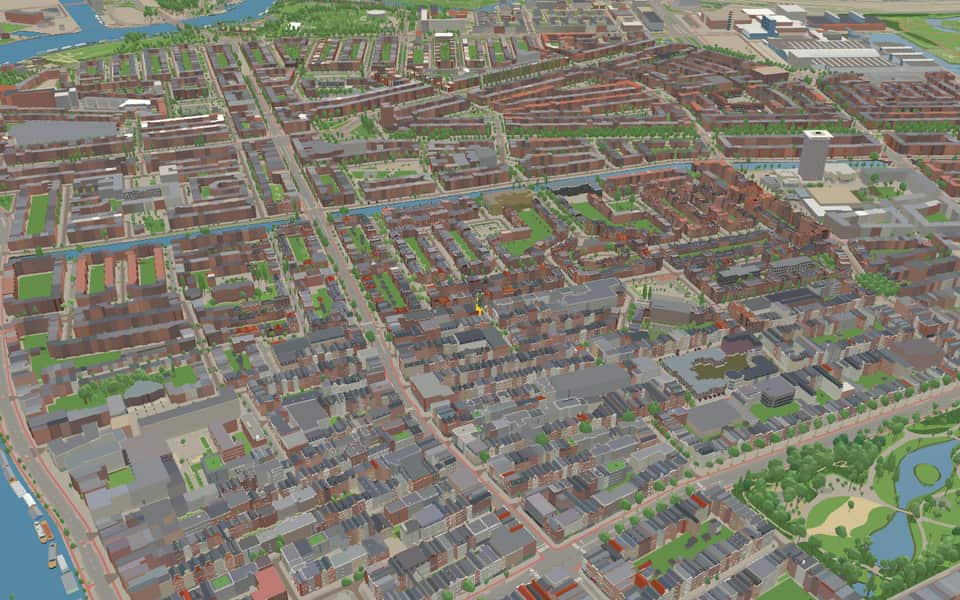
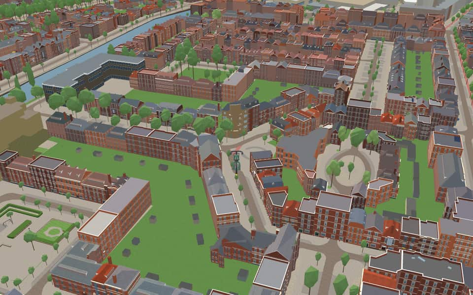
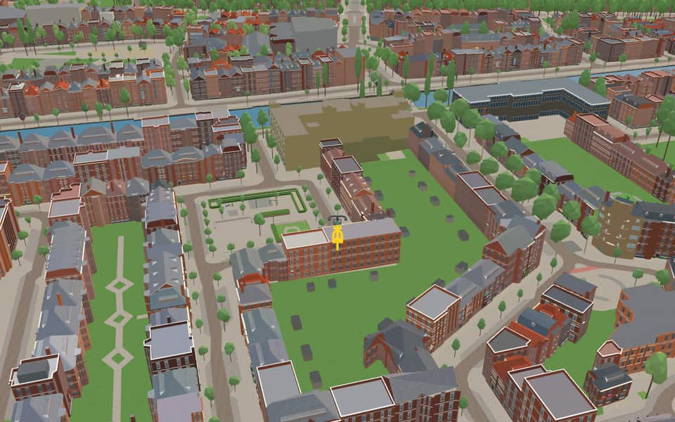
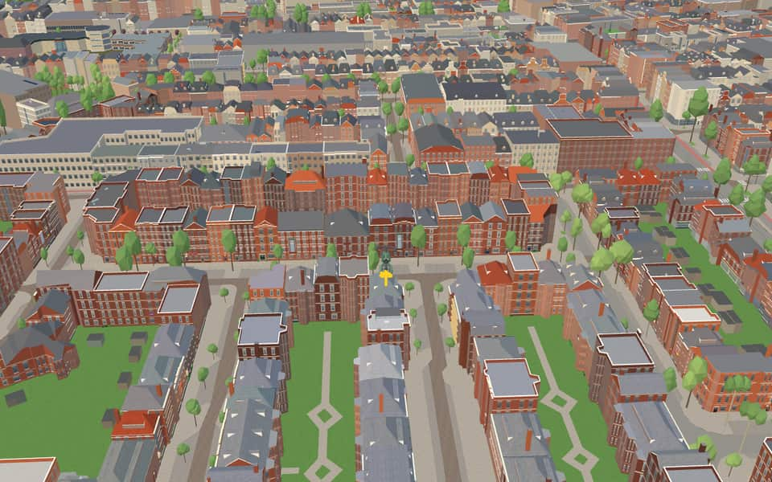

Neighbourhood in De Pijp
Diamantbuurt
The Diamantbuurt is a neighborhood of Amsterdam, The Netherlands. It was built in the 1930s. It has streets named after precious stones: Diamantstraat, Robijnstraat, Saffierstraat, Smaragdstraat, Topaasstraat and Granaatstraat. These days the Diamantbuurt includes the area enclosed by the Tweede van der Helststraat, Karel du Jardinstraat, Henrick de Keijserplein, Tolstraat, Amstel, and Amstelkanaal. en.wikipedia.org
Ride Diamantbuurt2 modelled buildings · 11 facts · 45 name stories


In the game
Frames from a ride through Diamantbuurt.




6 more photos of Diamantbuurt


Built here
Buildings modelled one by one for the ride.
Museum De Dageraad
Berlage Lyceum, Pieter Lodewijk Takstraat 33, Amsterdam (1924 Amsterdam School school in yellow brick)
Did you know
Trivia the ride can show you here.
- At one end of the Diamantstraat stands the Asscher diamond works, where the Cullinan, the world's largest diamond, was cut. Wikipedia (translated from Dutch)
- Its streets are named after precious stones: diamond, ruby, sapphire, emerald, topaz and garnet. Wikipedia
- Many diamond cutters once lived in the Diamantbuurt. Wikipedia (translated from Dutch)
- The first footbridge where the Han van Zomerenbrug stands, built in 1927, was largely paid for by the new residents themselves. Wikipedia (translated from Dutch)
- In 1920 the housing association De Dageraad commissioned De Klerk and Kramer to build 294 homes and six shops. Wikipedia (translated from Dutch)
- Museum De DageraadArchitects Michel de Klerk and Piet Kramer built the complex in 1920. nl.wikipedia.org
- Museum De DageraadThe house blocks follow the original layout of a planned hospital complex. nl.wikipedia.org
- Van BuurenmonumentThe globe rests on a compass rose, a motif recurring in architect Piet Kramer's work. nl.wikipedia.org
- Han van ZomerenbrugIn 2009, the bridge was renamed Han van Zomerenbrug after a graphic artist and WWII resistance fighter. nl.wikipedia.org
- Han van ZomerenbrugA man once tried to push a woman into the water through the railing on this bridge in 1928. nl.wikipedia.org
- Han van ZomerenbrugResidents largely financed the original footbridge built here in 1927 to connect new southern housing. nl.wikipedia.org
Names on the map
Where the canal, bridge and street names come from.
Bridges
- Han van ZomerenbrugHan van Zomeren (1920-1941) was a graphic artist active in the resistance during the German occupation. He printed pamphlets calling for resistance. He was executed by firing squad on the Laren heath in 1941 and reburied in the Field of Honour in Overveen in 1952.Bridge 402: a steel bridge for pedestrians, dated 2009 in the city's bridge register.
Streets
- AmsteldijkA canal dug around 1920 as part of Berlage's Plan Zuid. It connects the river of the same name with a five-way junction of canals, including the Boerenwetering, the Noorder Amstelkanaal and the Zuider Amstelkanaal.
- Burgemeester TellegenstraatJan Willem Cornelis Tellegen (1859-1921), structural engineer. Burgomaster of Amsterdam from 1915 to 1921; before that, director of the Building and Housing Inspectorate.
- CarillonstraatA carillon (klokkenspel) consisting of a number of cast bells.
- CoöperatiehofThe form of cooperation (coöperatie) through which the housing in this district was built after the First World War.
- Cornelis SpringerstraatPainter (1817-1891) of townscapes, among them Haarlem and Den Briel.
- CullinanpleinThe Cullinan is the largest South African diamond.
- David BlesstraatPainter and etcher (1821-1899), mainly of little scenes from domestic life.
- DiamantstraatThe hardest and most precious gemstone. Why this and other gemstones were used for names in the neighbourhood cannot be traced. It may be assumed that it was because of Asscher's diamond-cutting works, based in the Tolstraat since 1907. The street came over from the municipality of Nieuwer-Amstel under the name Eerste De Ruyterdwarsstraat (council decision of Nieuwer-Amstel, 30 September 1890).
- Dora TamanapleinSouth African resistance fighter (1901-1983), very active in the women's movement. A member of the women's wing of the African National Congress (ANC) and one of the leading figures of the Federation of South African Women.
- Ernst Cahn en Alfred KohnbrugErnst Cahn, the man with whom Alfred Kohn (died 1941) ran the Koco ice-cream parlours, the home base of Jewish fighting squads in the Second World War.
- Gerard RevebrugGerard Kornelis van het Reve (1923-2006), writer and poet. With Harry Mulisch (1927-2010) and Willem Frederik Hermans (1921-1995) he formed the Big Three of post-war literature. His works include 'De avonden' (the evenings, 1947), 'Werther Nieland' (1949) and 'Nader tot U' (nearer to thee, 1966). He received the P.C. Hooft Prize (1968) and the Prize for Dutch Literature (2001).
- GranaatstraatA semi-precious stone (garnet).
32 more streets with a story
- Henrick de KeijserpleinCity architect and sculptor (1565-1621). In Amsterdam he built the first Exchange, the Westerkerk, Zuiderkerk and Noorderkerk, and the Montelbaanstoren and Munttoren. In Delft his work includes the tomb of William of Orange.
- Henrick de KeijserstraatCity architect and sculptor (1565-1621). In Amsterdam he built the first Exchange, the Westerkerk, Zuiderkerk and Noorderkerk, and the Montelbaanstoren and Munttoren. In Delft his work includes the tomb of William of Orange.
- Henriëtte RonnerpleinHenriëtte Ronner, née Knip (1821-1909), painter, mainly of dogs and cats.
- Henriëtte RonnerstraatHenriëtte Ronner, née Knip (1821-1909), painter, mainly of dogs and cats.
- Jan LievensstraatPainter (1607-1674), a pupil of Rembrandt. His work includes murals in the city hall on the Dam.
- Jozef IsraëlskadePainter (1824-1911), a pupil of J.W. Pieneman and J.H. Kruseman, who became known for his socially engaged scenes, among them scenes from the lives of poor fishermen.
- Karel du JardinstraatPainter of landscapes and animals (1622-1678).
- Korte TolstraatAfter the toll gate (tol) on the corner of today's Tolstraat and the Amsteldijk. The toll was levied from about 1780 until the area was annexed in 1896, for the upkeep of the Amsteldijk from this point to Ouderkerk. Before the annexation the street was called Verversstraat (council decision of Nieuwer-Amstel, 11 February 1886).
- LutmastraatJanus Lutma (1588-1669), gold- and silversmith. Part of this street came over in 1896 from the municipality of Nieuwer-Amstel as the Ruyterstraat (council decision of Nieuwer-Amstel, 30 September 1890), while another part was called Lutmaplein until 1924 (council decision of 6 June 1917).
- MauvestraatAnton Mauve (1838-1888), landscape painter.
- MesdagstraatHendrik Mesdag (1831-1915), painter of seascapes.
- PaletstraatA painter's tool: the little board on which the painter mixes colours (the palette).
- PastelstraatA colour crayon (pastel); the name is also given to the finished work, the crayon drawing.
- PenseelstraatA painting and drawing tool, a thin brush.
- Pieter AertszstraatPainter (1508-1575) of genre pieces and church interiors. Before 1919 the street was called Nieuwe Tolstraat.
- Pieter Lodewijk TakstraatJournalist and politician (1848-1907), one of the leaders of the SDAP and editor-in-chief of Het Volk. He was one of the founders of the general workers' cooperative De Dageraad.
- PoggenbeekstraatGeorg Jan Poggenbeek (1853-1903), painter, mainly of landscapes.
- RobijnstraatA hard, red gemstone (ruby).
- RustenburgerdwarsstraatThe street was laid out in 1878 on the Rustenburgerpad, which recalls the former country estate Rustenburg, from 1620.
- SaffierstraatA hard blue gemstone (sapphire).
- SmaragdstraatA grass-green gemstone (emerald).
- TalmastraatAritius Sybrandus Talma (1864-1916), Reformed minister and later Anti-Revolutionary statesman, leader of the Christian Workers' Union and a director of the Patrimonium housing foundation, Minister of Agriculture from 1908 to 1913. He played an important part in improving bad conditions in public housing.
- Thérèse SchwartzepleinThérèse van Duyl-Schwartze (1851-1918), portrait painter. At the request of the painter Lizzy Ansingh her first name was included in full, to make clear that she was a woman.
- Thérèse SchwartzestraatThérèse van Duyl-Schwartze (1852-1918), portrait painter. At the request of the painter Lizzy Ansingh her first name was included in full, to make clear that she was a woman.
- ToldwarsstraatAfter the toll gate (tol) on the corner of today's Tolstraat and the Amsteldijk. The toll was levied from about 1780 until the area was annexed in 1896, for the upkeep of the Amsteldijk from this point to Ouderkerk. Before the annexation the street was called Verversstraat (council decision of Nieuwer-Amstel, 11 February 1886).
- TolstraatAfter the toll gate (tol) on the corner of today's Tolstraat and the Amsteldijk. The toll was levied from about 1780 until the area was annexed in 1896, for the upkeep of the Amsteldijk from this point to Ouderkerk. Before the annexation the street was called Verversstraat (council decision of Nieuwer-Amstel, 11 February 1886).
- TopaasstraatA yellow gemstone (topaz).
- Tweede Van der HelststraatBartholomeus van der Helst (1612-1670), painter of militia and regents' group portraits.
- Van der HelstpleinBartholomeus van der Helst (1612-1670), painter of militia and regents' group portraits.
- Van Helt StocadestraatNicolaas van Helt Stocade (1615-1669), painter, mainly of portraits.
- Van WoustraatGeert van Wou (c. 1450-1527), renowned bell-founder from Kampen.
- Willem PasstoorsstraatWillem C.J. Passtoors (1856-1916), Amsterdam tobacconist, who in 1888 founded the Roman Catholic People's League in the Netherlands and so became the founder of the Roman Catholic labour movement in the country. From 1901 to 1913 he was a member of the House of Representatives.
1 other street without a recorded story
Smaragdplein